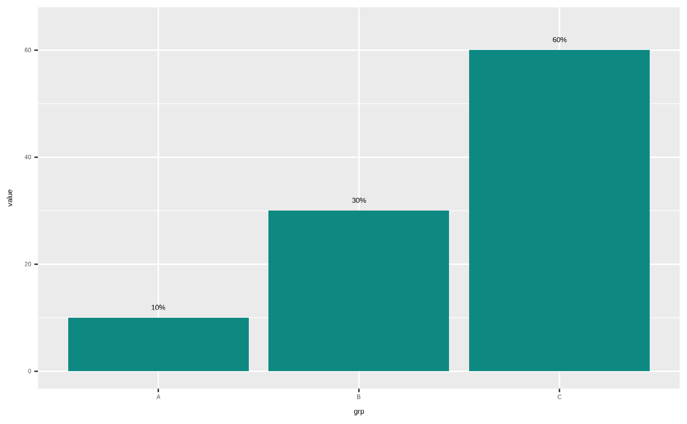
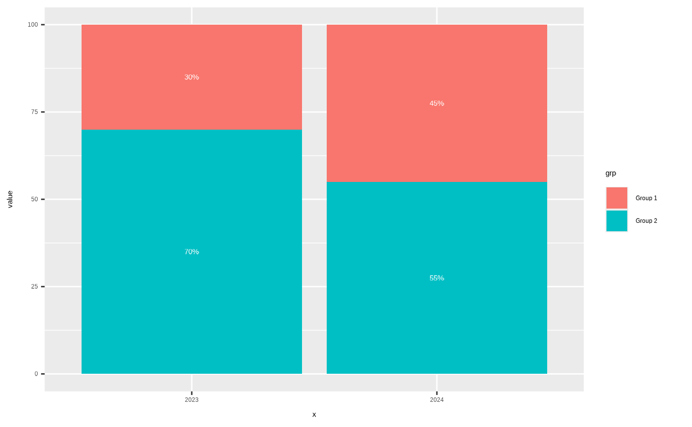
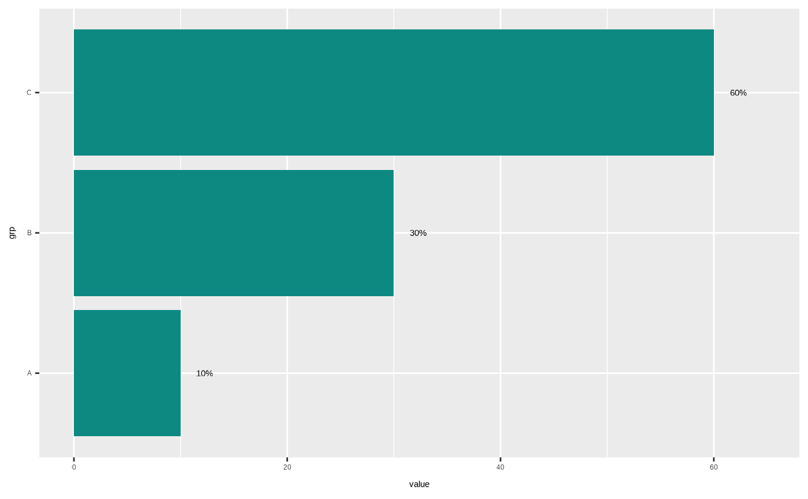

Adds a text label above (or inside) each column showing its share of a total, as a percentage. Percentages are calculated automatically from the data, so there is no need to pre-compute a percentage column:
For stacked columns (i.e. more than one value sharing the same
x, typically via afillaesthetic), each label shows that segment's share of its column's stack.For single (non-stacked) columns, each label shows that column's share of the total across all columns in the panel.
Usage
geom_col_label(
mapping = NULL,
data = NULL,
...,
accuracy = 1,
align = "top",
reverse = FALSE,
na.rm = FALSE,
show.legend = NA,
inherit.aes = TRUE
)Arguments
- mapping
Set of aesthetic mappings created by
ggplot2::aes(). Requiresxandy; addfill(as you would forggplot2::geom_col()) to create stacked segments.- data
The data to be displayed in this layer.
- ...
Other arguments passed on to
ggplot2::geom_text(), e.g.colourorsize.- accuracy
Numeric. Passed to
scales::label_percent()to control rounding, e.g.accuracy = 0.1shows one decimal place. Defaults to1(whole percentages).- align
Where to position the label. One of
"top","middle","bottom", or a number from 0 (bottom of the column/segment) to 1 (top of the column/segment). Defaults to"top". For single (non-stacked) columns,"top"floats the label just above the column, and"bottom"sits it just inside the column above its base - both leave a small gap rather than sitting flush against the column. For stacked columns,"top"/"bottom"sit just inside each segment's own top/bottom edge (not just the outer edge of the stack as a whole) with the same gap. Any other value centres the label inside the column/segment at that fraction of its height.- reverse
Logical. Reverse the stacking order used to position labels within stacked columns. Set this to match
position_stack(reverse = TRUE)if you used that for yourgeom_col(). Defaults to FALSE.- na.rm
If FALSE, the default, missing values are removed with a warning. If TRUE, missing values are silently removed.
- show.legend
logical. Should this layer be included in the legends?
- inherit.aes
If FALSE, overrides the default aesthetics.
Details
Works the same way with ggplot2::coord_flip(): the labels are
computed in data space (before the flip is applied), so align = "top"
still means "furthest from zero", which renders past the end of a
horizontal column once flipped.
Every edge-aligned label leaves a gap between itself and the column -
scaled to the data's own range, so it looks proportionate whether the
y-axis runs from 0 to 10 or 0 to 100,000 - and only one of them needs
any extra space beyond the columns to do that: a single (non-stacked)
column's align = "top" label genuinely floats outside the column, so
a small amount of headroom is reserved automatically beyond the tallest
column for it (this matters because theme61's default
scale_y_continuous_e61() has no expansion at the data max/min).
"bottom" on a single column, and both ends of a stacked column, sit
just inside the column with their own gap nudged inward from the edge
instead, so they need no reserved space beyond the column at all.
An explicit scale_y_continuous_e61(limits = ...) always takes
precedence: the reserved top headroom and the single-column gap are
capped at the supplied limit rather than nudging past it, since
scale_y_continuous_e61() errors if data falls outside a limit you've
set. If your limit sits exactly at (or inside) the data's own range,
the label may end up flush against the edge again - widen the limit if
you want the gap back.
Examples
library(ggplot2)
# Single columns: label shows each column's share of the total
df <- data.frame(grp = c("A", "B", "C"), value = c(10, 30, 60))
ggplot(df, aes(grp, value)) +
geom_col() +
geom_col_label()

# Stacked columns: label shows each segment's share of its column
df2 <- data.frame(
x = rep(c("2023", "2024"), each = 2),
grp = rep(c("Group 1", "Group 2"), 2),
value = c(30, 70, 45, 55)
)
ggplot(df2, aes(x, value, fill = grp)) +
geom_col() +
geom_col_label(align = "middle", colour = "white")

# Works the same way flipped
ggplot(df, aes(grp, value)) +
geom_col() +
geom_col_label() +
coord_flip()
